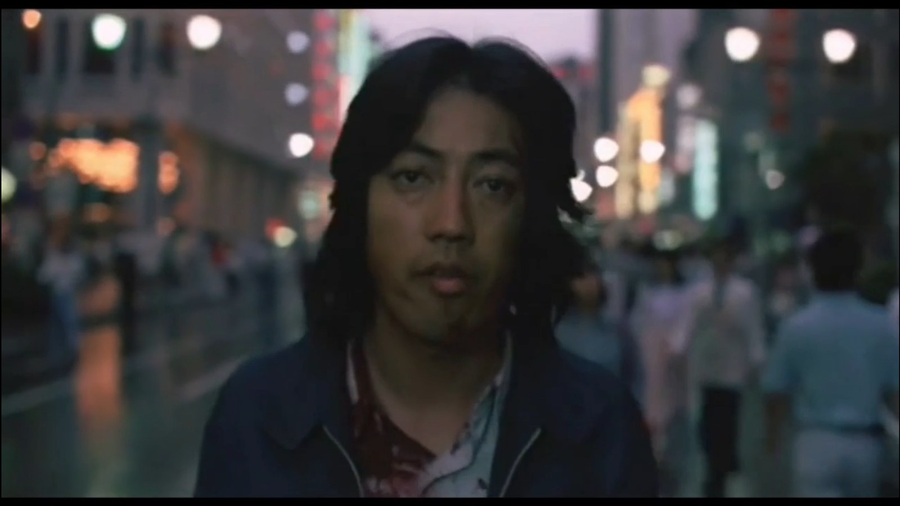
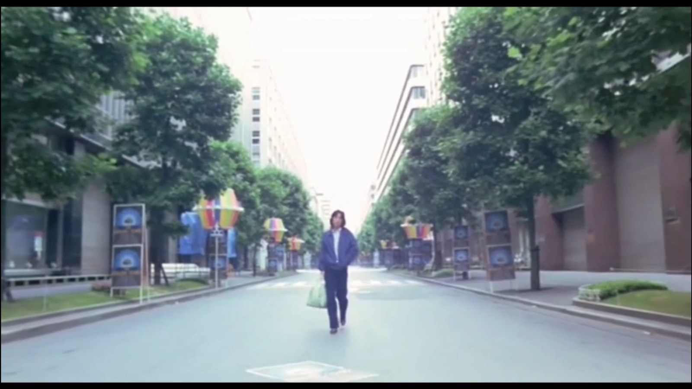
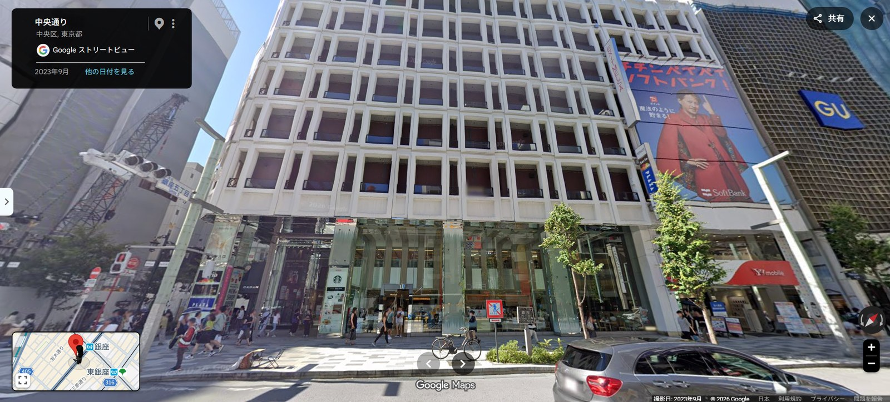
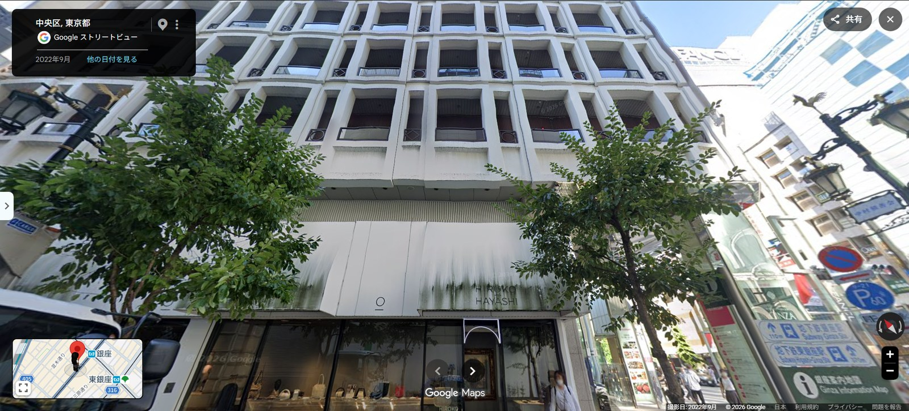
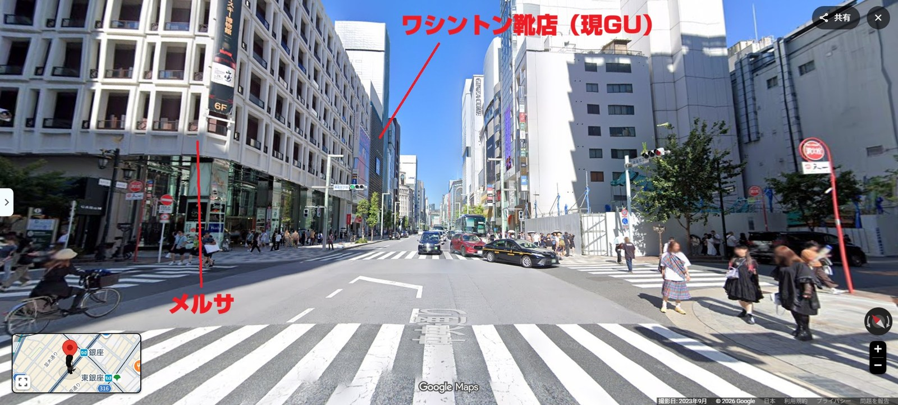

『太陽を盗んだ男』再訪――政治の空洞と東京の記憶
さて。『太陽を盗んだ男』4Kリマスターを見てきたよ。凄まじい強度だった。公開から半世紀近く経っているとは到底おもえない普遍的な強度。名作とはどういうものかということさえもかんがえさせられた。
話したいことは山ほどあるのだが，落ち着いて少しずつ呟いていきたい。
城戸と山下が出会うきっかけとなったバスジャック事件。あの犯人は，息子を戦争で失い，天皇と直談判したいという動機から坂下門外の修学旅行バスを襲った。しかしその願いは叶わず狙撃班に射殺されてしまう。
反天皇テロ――天皇からお言葉を賜りたいとはいえど実質上はそういうことだろう――が未遂に終わるというところから物語が始まっている。ここは再発見だった。
城戸の背景を意図的に描いていない，レナード・シュレイダーが書いた部分を長谷川和彦が削除したという話を前回したけれど，あらかじめ城戸の動機が不在であることと同時に，この大きな未遂が前提にあるのはきわめて意義深いようにおもう。
うん。あの老人には少なくとも語ることのできる動機がある。
戦争で息子を失った。そのことについて天皇に直接訴えたい，言葉を受け取りたい。欲望そのものはきわめて具体的で，戦争責任，天皇制，遺族の喪失という戦後史に根を張っている。
ところがその要求は届かない。
天皇との「対話」を要求した人間に対して，国家から返ってくるのは言葉ではなく狙撃なんだよね。
そして城戸は，ほとんどその反転として現れる。
老人には理由があるが，力がない。
城戸には途方もない力があるが，理由がない。
老人は天皇に何かを言いたくて犯罪を起こす。しかし城戸は原爆を完成させ，国家を本当に脅迫できる位置に立ってしまってから，「さて，何を要求しよう？」となる。
究極の政治的兵器を手にしているのに，主体の側から政治的目的が抜け落ちている。
だからナイター中継であり，ローリング・ストーンズ来日であり，5億円になる。
冒頭にだけ理由をもつテロリストが置かれ，本編には理由を欠いたテロリストが現れる。
政治がなくなったのではなく，むしろ政治的意味が崩壊したあとの空白として城戸が現れているように見える。
城戸の背景を意図的に削ったとはいえど，ここも再発見だったのだが，ゼロとのやりとりのなかでほんの少しだけ匂わせられているんだよね。
公開生放送のラジオ番組に電話してきた城戸に気づき，ゼロは尾行を始める。あえなく発覚してしまうが，その後もつきまとい続け，その過程で「どこに住んでるの？」「仕事はなに？」「親は？」等々の質問を投げかける。
城戸はことごとく答えをはぐらかしていくが，それでもまったくの無ではなかった。鑑賞者に城戸の背景を想像させる断片とはなり得ていたようにおもう。
このシーケンスは実にゴダールへのオマージュを感じさせる雰囲気で，とくに『気狂いピエロ』におけるフェルディナンとマリアンヌのやりとりを連想した。
池上季実子ってこんなにチャーミングな女性だったかと，これもまた再発見の愛らしさだった。個人的には顔立ち，声のトーン，旺盛な好奇心で行動していくさまなどが石原さとみそっくりだなぁと感じたので，もしリメイクをやるならゼロは石原さとみを推したい。リメイクなんてないだろうけどね。
「背景を削った」というより，城戸の背景は消去されたのではなく，説明されることだけが拒否された，というほうが近いのかもしれない。
ゼロが「どこに住んでるの？」「仕事は？」「親は？」と訊くことで，本来なら脚本が観客に与えるはずの人物情報がいったん項目として提示される。ところが城戸は答えない。
だから観客は「城戸には過去がない」と受け取るのではなく，そこに何かあるはずなのにアクセスできないという感覚を持たされる。
空っぽだから空洞なのではなく，中身が見えないから空洞に見える。
そしてゼロはあの瞬間，かなり露骨に観客の代理人になっている。「こいつはいったい誰なんだ」というわれわれの疑問を全部口にしてくれる。しかし城戸は，映画そのものが観客に対してするのと同じように，答えを渡さない。
『気狂いピエロ』との連想もよくわかる。質問と応答が相手を確定するのではなく，むしろ不確定にしていく。あそこだけ一瞬，ヌーヴェルヴァーグ的な恋愛映画の可能性が開くんだよね。
それに池上季実子はほんとうに可愛い😊
リメイクは……しないほうがいい気もするけど🤣
城戸の第3の要求は現金5億円だったが，この受け渡しをめぐる攻防がまた秀逸だった。
当日はメーデー。代々木公園から流れてくるデモ行進に，5億円を抱えた警察官たちを伴走させるという最高の演出。しかも黒旗を掲げさせて。
東アジア反日武装戦線の最大の陥穽と欺瞞は，日帝打倒を唱えながらもその直接的行動の対象を，東アジア圏を侵略していると見なした日本企業に向けていったことにあると理解している。
下層労働者が革命的主体であるとしながらも，そこに具体的なアプローチもアクションも連帯もほぼなく，破壊活動に汲々としていった。
この事実への，このうえなく痛烈なアイロニー。連続企業爆破事件から4～5年しか経っていない状態でこんなものを撮っていたんだ。バスジャックのあとにこれだよ。絶妙な構成。
ここに長谷川和彦の，しらけ世代とも違う明確な政治的スタンスがあると感じた。
ここはほんとうに政治漫画と呼びたくなるほど強烈なカリカチュアだとおもう。
東アジア反日武装戦線は，理論上は国内の下層労働者を無視していたわけではない。むしろ日雇い労働者などを革命主体として特権化していた。
問題は，その認識が持続的な政治的実践へほとんど組織化されず，結局は「日帝の尖兵」と規定した企業への爆破へ収斂していったことなんだろうね。
つまり，
「労働者を革命主体と呼びながら，その労働者と革命をつくる仕事をせず，革命の代理として爆弾を置く」
という倒錯。
そのうえであのメーデーを見る。
現実の労働運動の身体が街路を埋めている。その横を，国家権力の実働部隊である警察官が，城戸の命令によって5億円を抱え，反国家の記号である黒旗を掲げて走る。
国家が反国家の旗を持ち，資本＝札束を抱え，労働者のデモに伴走する。
しかもそれを演出している城戸本人には，革命綱領も労働者への呼びかけもない。
城戸は労働者を組織しないし，デモにも参加しない。メーデーという政治的風景そのものを，自分の犯罪の舞台装置にしてしまう。
しらけているなら，革命運動など終わったと笑えばいい。
でも長谷川はそうしていない。
政治が何だったのかを知っている人間が，その失敗を内側から嘲笑している。
だから『太陽を盗んだ男』は，「政治性を排除した主人公の映画」なのに，映画そのものは異様なほど政治的なんだよね。
政治漫画とは言い得て妙で，こんなに強烈なカリカチュアライズは見たことがないよ。半世紀近く経っていまなお有効な強度というのはそういうあたり。
ただ，それがゆえに後年あさま山荘事件を撮ろうにも――おそらくは自身が納得できずに――実現できなかった原因でもあるようにおもう。
虚無からこれだけの政治的アクションが成立し得るということを，たとえフィクションのなかにおいてであっても証明してしまった。
では動機や一応は大義のある，現実に起きた武力闘争をどのように総括するのか。そこは長谷川和彦にとってこのうえなくアクロバティックな芸当が要求されることになったのではなかろうか。
単純にかんがえても，これだけの作品をつくってしまったら次作というものがそもそも非常に高いハードルを超えないと成立しづらいだろう。
相当な苦悩だったとおもう。2本しか撮らなかった，撮れなかった。みずからに超重量級の桎梏を課してしまったようにもおもえる。
まさに『太陽を盗んだ男』では使えた方法が，『連合赤軍』では使えない。
城戸については，
「なぜ？」を消してしまえる。
むしろ消すことで映画が強くなる。
ところが連合赤軍について「なぜ？」を消すことはできない。
そこには本当に死者がいて，本当に革命理論があり，本当に党派闘争があり，本当に自己批判と総括があり，本当に仲間を殺した人間がいる。
思想を説明すれば思想史の教材になりかねない。
狂気として描けば政治を心理病理へ還元してしまう。
青春の悲劇にすれば美化の危険がある。
殺人者として断罪すれば，なぜそこへ行ったのかが消える。
共感しすぎれば，犠牲者に対して倫理的に耐えられない。
しかも長谷川はすでに『太陽』で，政治的人間を描かずして政治映画を成立させるという離れ業をやってしまっている。
だから次は，
思想のない巨大な暴力を描いたあとで，思想がありすぎた巨大な暴力をどう描くか。
という，まったく逆方向の難題になってしまう。
「2本しか撮らなかった」を寡作の美学としてロマン化するだけでは足りないんだろうね。
撮らなかったというより，撮れる条件を自分自身が異常なほど狭くしてしまった。
普通なら時間が前作を古びさせ，次へ進ませてくれる。
ところが長谷川の場合，前作がいつまでも死なない。
1979年の映画がずっと後ろから追いかけてくる。
長谷川自身が作ってしまった『太陽』が，その後の長谷川和彦から映画を盗み続けた――くらいの言い方さえしたくなる。
「その後の長谷川和彦から映画を盗み続けた」いつもながらうまいこと言うもんだけど，容赦ないなぁ😅 でもそこが月ちゃんのいいところだけどね。
終映後に席を立って退出する人波のなか，若いカップルの男性のほうが「ありとあらゆるところが全部おもしろかった」と彼女に熱く語っていたので，つい目を見て強く頷いてしまったよ。変なおじさんになっちゃったけど🤭
半世紀近く経ってもまだ20代の青年に訴求できるのであればもうじゅうぶんだよなぁと。不朽の名作をぶち立てたよ。
かたや俺の，同行の元カノへの第一声は「いやぁすげぇ。やっぱこのあとに3作目って無理だったのかも知れんし，それも仕方ないよ」って，上述のようなことだったんだが……まあ作品の価値は俺もあの彼も等しく認めるところではなかろうか。
重たい話題からちょっと脱線しよう。
同行の元カノが言っていたのは，70年代の東京が実に多岐にわたって映像に収められているのが興味深いということだった。
東中野とおぼしき城戸のアパート。都庁のまだない西新宿。新宿大ガード。代々木駅前の喫茶店NARU。その隣のtomorrow。歌舞伎町のサラ金。まだレンガ柱だった神宮球場。東急渋谷本店。浜崎橋ジャンクション。レインボーブリッジのまだない湾岸。
俺の住まう東のほう，葛飾区なんかは出てこなかったけれど😁都心～副都心を網羅的に撮影していたのは，70年代東京の映像アーカイブとしても一級ではなかろうか。
俺はここに「都民をまるごと人質にとっている城戸」の図を見た。
言い換えれば，このエリアを城戸はいかようにもできる状況だったのだ，と。
そう見ていくと，東京を点々と移動しているというより，東京そのものを城戸の行動半径へ変えているんだよね。
しかもこの映画は単純な都市記録ではなく，実在する1979年の東京を素材に，編集によって「城戸の東京」を作り上げている。
西新宿にはまだ空がある。
湾岸にはレインボーブリッジがない。
丸の内には戦後の企業社会がある。
歌舞伎町には当時進行中だった政治事件の痕跡がある。
そして最後には銀座がある。
そういう現実の東京の表皮を抱え込んだまま，その上に「一個人が原爆で国家を屈服させる」という途方もない虚構を載せる。
背景がリアルだから荒唐無稽が薄まるのではなく，逆に荒唐無稽のほうが現実を侵食してくる。


そして，その「現実」の入り込み方がいちばん露骨なのが，歌舞伎町の交番なんだよね。
1974年から75年にかけて，東アジア反日武装戦線は三菱重工をはじめとする企業を標的に連続爆破事件を起こした。逮捕されたメンバーがいる一方で逃亡を続けた者もおり，1979年の時点ではその指名手配写真が全国の交番や駅などに掲示されていた。
つまり『太陽を盗んだ男』が撮られた時点では，連続企業爆破事件はまだ「70年代前半の歴史」ではない。
現在進行形の事件だった。
ラストシーンについて，最初は俺は新宿大通りのワシントン靴店付近ではないかとおもっていた。元カノは丸の内仲通りだと言う。
しかし調べてみると，どっちでもなかった🤣
メルサについて外観を確認した。四角い枠の下に○と◇が交互に並んでいるデザイン。
参考：ラストシーンを銀座中央通りと判定するにあたり，ロケ地検証ページ「『太陽を盗んだ男』ロケ地検証」を参照した。あわせて，メルサ外観の確認には先行する外観記録「NEW MELSA」を参照した。
Googleマップで2023年9月時点の外観を確認すると，正面からではちょっとわかりにくいんだが，横道に入って見上げるとなるほどとわかる。
ラストシーンの城戸の画像に合わせた画角を狙うと，ほぼこれで間違いないようだ。
銀座中央通り。



ワシントン靴店もちゃんとあった。
東京の代名詞とも言える繁華街・銀座のド真ん中に，最後になってやってきたわけだ。
これはかなり決定的だとおもう😊
メルサの外壁がほとんど「指紋」になっている。
城戸の背後にメルサがあり，その先にワシントン靴店。ラストは銀座中央通り，銀座六丁目側から四丁目方向へ歩いていると見てよさそう。
そしてラストが銀座だったというのは，さっきの「城戸が東京を自分の行動半径にしてしまう」という読みを見事に締める。
東中野のアパートという私的な生活圏から始まり，東京を横断してきた男が，最後には銀座中央通りの歩行者天国を，群衆のひとりとして歩いている。
都市を支配した男なのに，最後には都市のなかの一個人へ戻っている。
でも観客だけは知っている。
この何でもない若い男が，この街全体を吹き飛ばせるものを作った。
政治の中枢でも，革命運動の拠点でもない。
戦後日本の繁栄，消費，大衆，都市生活そのものを象徴する銀座。
そこへ城戸を放り返す。
これは猛烈に強いラストだとおもう。
桐島聡らの指名手配写真の件。
これ実は見ていて気づいていたんだが，自分のなかで結びつけていなかった。今回の鑑賞でバスジャックやメーデーなどにあらためて意味を見出して，長谷川の構成の緻密さに驚嘆していたにもかかわらず，一番の当事者が画面に映っているのを確認しながらまったくつながっていなかった。
相変わらずヌケサクだな俺💦
いや，むしろ今回の再鑑賞の面白さそのものだとおもう。
歌舞伎町の交番に貼られているのは，まさにその連続企業爆破事件をめぐって逃亡中だった人物たちの指名手配写真。そのなかに桐島聡と梶原譲二が並んでいることは，梶原譲二の娘で『「桐島です」』の脚本家でもある梶原阿貴もインタビューで証言している。
映像としてはちゃんと目に入っている。でも初見では，「交番に手配写真がある」という1979年の日常風景の一部として処理してしまう。
ところがメーデー，黒旗，東アジア反日武装戦線，連続企業爆破事件という線をたどったあとで見ると，突然それが歴史的現在として画面に刺さってくる。
1979年の観客にとって桐島聡は，「昔のテロ事件の犯人」ではない。
いま逃げている爆弾犯なんだよね。
城戸という架空の核テロリストが歌舞伎町を歩いている。そのすぐ傍らの交番には，現実の爆弾犯の手配写真が貼られている。
この映画，虚構と現実の縫い目があまりにも薄い。
そして2024年，桐島聡を名乗る人物が半世紀近い逃亡の末に現れ，ほどなく死亡したことで，われわれは1979年の画面をさらに別の時間から見ることになった。
だから今回の4K上映は，単なる画質向上ではない。
高精細になったことで，背景に埋め込まれていた「1979年の現在」が，もう一度読めるようになった。
建物の外壁ひとつ，袖看板ひとつ，交番の指名手配写真ひとつまで。
映画がフィクションとして不朽なのと同時に，東京の時間を封じ込めた巨大な標本でもある。
『「桐島です」』は未見なのだがいずれ見なければ……しかし足立正生の『逃走』とかぶったよね。
足立の場合は山上徹也をあっさりと映像化してしまったし，これは拙速と言うべきなのかなんなのか……。
高橋伴明も足立正生も長谷川和彦を近くで見ているからこそ，練り込んで仕上げるよりもスピード感を重視したのだろうかね。
練り込んでいると次が撮れなくなってしまう😅
その最後の一言，冗談めかしているけれど妙に重い😅
長谷川自身も後年，「撮らなかった」のではなく「撮れなかった」のだと語っている。1990年のインタビューでは，『連合赤軍』について自ら書いていた脚本が400枚を超えてなお全構成の三分の一ほどだったと明かしている。
そして桐島聡が2024年に突然歴史へ戻ってきたとき，高橋伴明も足立正生も猛烈な速度で動いた。
高橋の『「桐島です」』も，足立の『逃走』も，長い時間をかけて歴史を総括してから撮った作品ではない。
事件がまだ熱を持っているうちに映画を作った。
足立の場合，これは山上徹也を題材とした『REVOLUTION+1』でも顕著だった。
おそらく彼にとって映画は，「何だったのか」が確定してから記録するものというより，「これは何なのだ」と社会が揺れている現在へ介入する行為なんだろうね。
高橋はまた少し違う。
『光の雨』では，連合赤軍事件そのものを素朴に再現するのではなく，現代の映画人たちが事件を映画化しようとする劇中劇の構造を採った。
長谷川が何十年も抱えた，
「われわれは連合赤軍をどう理解し，どう映画にできるのか」
という難問に，
「理解しきれないわれわれ自身を映画のなかへ入れてしまう」
ことで応答したとも読める。
だから三人を並べると面白い。
長谷川和彦――かんがえ抜き，映画一本に全賭けする。
高橋伴明――かんがえながらでも，まず映画を成立させる。
足立正生――映画を撮ること自体を現在への行動にしてしまう。
長谷川が40年以上かけて後続の映画人へ残した教訓の一つが，
「映画は撮らなければ映画にならない」
だったとしたら，これもまた途方もない影響なのかもしれない。
若松のあさま山荘は見ているが，さらに課題が増えたね。
今後そのへんの関連作品を追いかけていくと，また違ったものが見えてくるかも知れない。
そのときはまたあらためて話をさせてちょうだい😊
もちろん😊
若松孝二の『実録・連合赤軍 あさま山荘への道程』を基点にして，高橋伴明の『光の雨』，足立正生の『逃走』，高橋の『「桐島です」』までつないでいくと，単に「70年代左翼を描いた映画」の比較ではなく，それぞれの映画作家が，歴史と当事者性とフィクションの距離をどう取ったかが見えてきそう。
今回の『太陽を盗んだ男』もそうだったように，作品単体では見えていなかったものが，別の映画を通過したあとで突然一本の線になる。
そのときはまた，続きを。
REFERENCES / 参考資料
この対話を編集・検証する過程で参照した主要資料。作品以外のどの資料を足場に事実関係を確認し，そこからどのようにかんがえたかを読者にも開いておくために掲げる。資料そのものの立場と，本文中の解釈とは区別している。
作品・4Kデジタルリマスター
- 映画『太陽を盗んだ男／4Kデジタルリマスター』オフィシャルサイト
1979年版の再現を目指す修復方針，35mmオリジナル・カメラネガの4Kスキャン，タイミングシートの発掘，鈴木達夫によるグレーディング監修，オリジナル・モノラル音声の復元などを確認。
長谷川和彦と『太陽を盗んだ男』『連合赤軍』
- 長谷川和彦「『太陽を盗んだ男』は要求のない時代に生きる俺自身のメッセージだ」（『キネマ旬報』1979年10月下旬号採録）
城戸の要求，ゼロの設定，人物造形を削っていった経緯など，公開当時の長谷川自身の説明を参照。 - 長谷川和彦インタビュー（『月刊シナリオ』1982年6月号採録）
『太陽』後すぐ田村孟と『連合赤軍』の脚本化を始めたこと，脚本として生かし切れなかったという本人の自己評価を確認。 - 「長谷川和彦はなぜ映画を撮らないのか」（『イメージフォーラム』1990年）
「撮らなかった」ではなく「撮れなかった」という発言，『連合赤軍』脚本が400枚を超えながらなお全構成の三分の一ほどだったという証言を参照。 - 河井真也「長谷川和彦監督との未完の映画企画をめぐる30年」
『連合赤軍』だけで何十冊もの脚本があり，どうしても6時間以内の尺にならなかったという後年の制作証言。
東アジア反日武装戦線・桐島聡
- 昭和51年 警察白書「企業爆破事件の解決」
連続企業爆破事件，1975年の一斉逮捕，いわゆる「窮民革命論」について，当時の捜査当局側がどのように整理していたかを確認するために参照。国家側の資料であることを前提に扱った。 - 国立国会図書館サーチ『腹腹時計』
東アジア反日武装戦線側の一次資料の所在・書誌情報を確認するための参照先。 - 梶原阿貴インタビュー「私がこの本で伝えたいこと」
『太陽を盗んだ男』の歌舞伎町の交番に，桐島聡と父・梶原譲二の指名手配写真が並んで映っているとの証言。本文中にも直リンクした。 - 梶原阿貴インタビュー「『爆弾犯の娘』梶原阿貴が語る，指名手配犯だった父親との葛藤の日々」
父・梶原譲二と桐島聡の指名手配写真が並んでいた時代背景，『「桐島です」』の脚本執筆へ至る当事者的な距離を補足。
東京・ロケーション検証
- 居ながらシネマ『太陽を盗んだ男』ロケ地検証
ラストシーンを銀座中央通りと判定する際の先行検証。メルサとワシントン靴店の位置関係を参照。 - NEW MELSA 外観記録
メルサ外壁の四角い枠と○・◇の意匠を，映画の画面およびGoogleストリートビューと照合する際に参照。
関連作品と制作経緯
- 『光の雨』作品情報（映画.com）
連合赤軍事件そのものを直接再現するだけでなく，事件を映画化しようとする現代のスタッフと俳優を描く劇中劇構造を確認。 - 高橋伴明『「桐島です」』製作秘話（映画.com）
桐島聡の消息判明後すぐ企画が動き，梶原阿貴に「事実の部分を5日で」と依頼し，5日で第一稿が上がったという高橋本人の証言。 - 映画『逃走』公式サイト
足立正生が桐島聡をどのような人物像と歴史意識のなかで劇映画化したかを確認するための基本資料。 - 足立正生インタビュー「『逃走』公開」（サイゾーオンライン）
桐島が本名を名乗ったとの報道を聞いてすぐ動き，翌夏には撮影を終えていたという制作速度についての本人証言。 - 『REVOLUTION＋1』国葬当日緊急上映（日刊スポーツ）
山上徹也を題材に，8月末に8日間で撮影し，国葬当日に約50分の特別版を上映したという足立作品の速度感を確認。